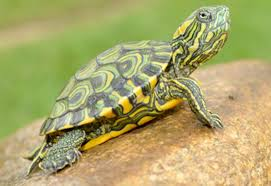
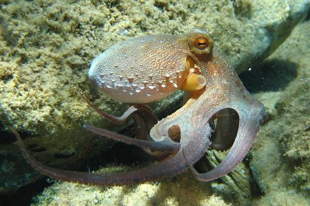
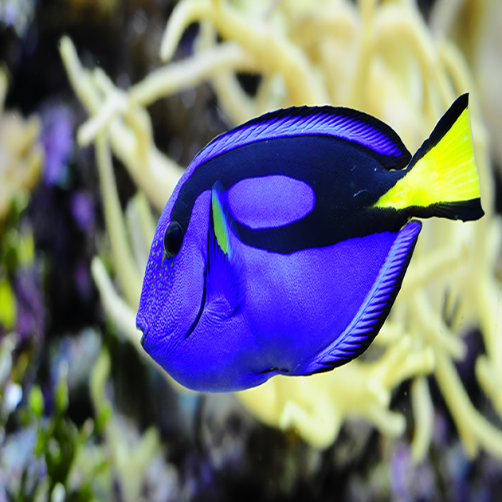
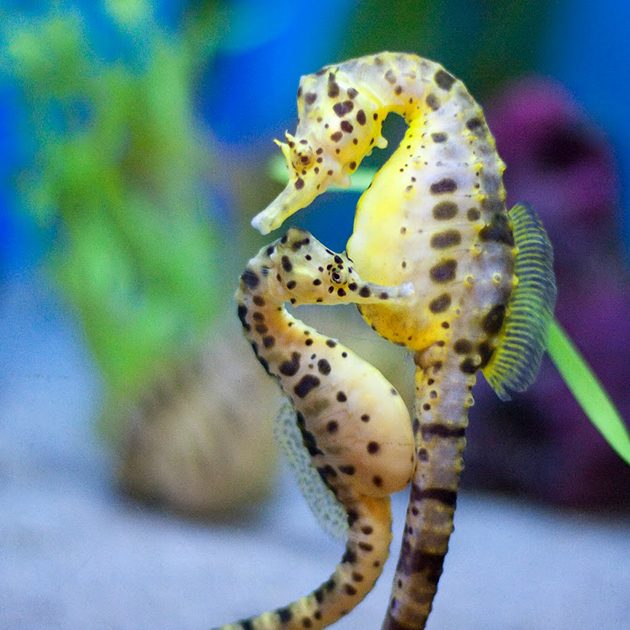
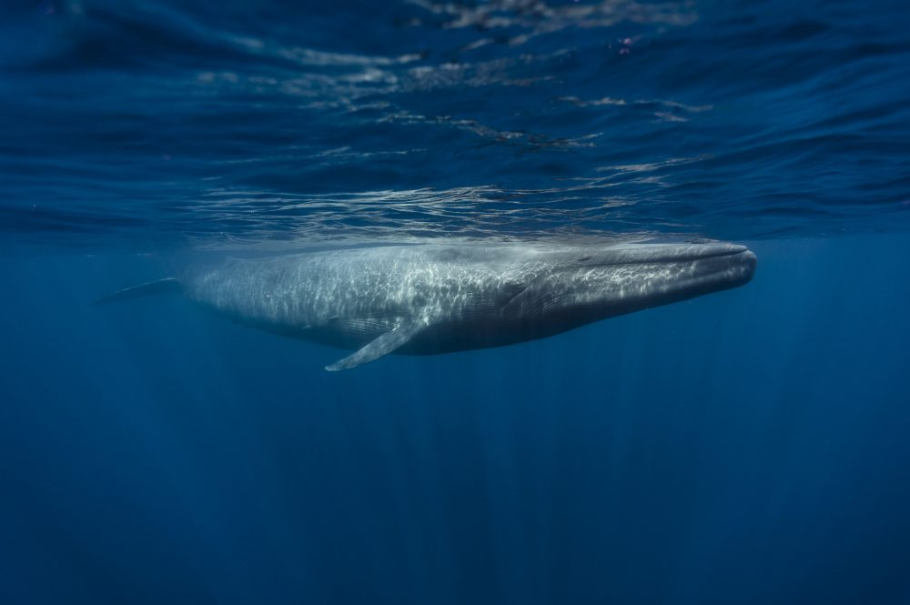

| Foto | Nome Popular | Nome cientifico | Reproduçao |
|  | Tartaruga | Testudinata (Chelonioidea) |
A fecundação interna com 3 a 5 desovas numa mesma temporada de reprodução.As fêmeas normalmente desovam de 4 a 6 vezes por temporada, com 61 a 126 ovos por ninho. Normalmente mais da metade do ninho consiste de ovos pequenos e sem gema (não férteis). A incubação varia de 50 a 78 dias e a temperatura "ótima" é por volta de 29º C. |
|  | Polvo-Comum | Octopoda | A reprodução é sexuada. A fêmea libera um feromônio sexual na água, que atrai machos, podendo ser fecundada por mais de um parceiro. Polvos possuem um braço modificado, o hectocotylus que introduzirá os espermatóforos na fêmea. Elas são capazes de guardá-los no seu interior até que os óvulos amadureçam. São milhares de ovos que podem ser depositados nos mais diversos lugares, dependendo da espécie, por exemplo, em ninhos. A mãe cuida dos ovos até eclodirem e morre pouco tempo depois, já que não se alimentam durante este processo. Os machos morrem algum tempo depois da cópula. Quando nascem ficam na superfície da água se alimentando de zooplâncton e quando adultos a maioria das espécies habita as águas profundas. |
|  | Cirurgião Patela | Paracanthurus hepatus | A reprodução ocorre entre o fim da tarde e a noite. Nesse momento, as cores do cirurgião patela mudam, passando de um azul uniforme para um azul claro a parte anterior e azul escuro na parte posterior. Os machos tratam as fêmeas do cardumes com agressividade; a fecundação é externa e feita rapidamente. |
|  | Cavalo Marinho | Hippocampus | A fêmea, no momento da cópula, transfere os ovos de sua bolsa incubadora para dentro da bolsa incubadora do macho. O macho gera os filhotes. A fecundação é interna, pois ocorre dentro da bolsa incubadora do macho, no momento que ele libera o esperma. Essa bolsa fica na região ventral da cauda. Como os peixes não possuem útero, o filhote cresce em uma cavidade que recebe o nome de cavidade ovariana ou folicular, que fornece nutrientes e gases aos ovos. A gestação dura dois meses, geralmente ocorre na primavera. No momento do nascimento, os ovos eclodem dentro da bolsa incubadora. O macho se contorce violentamente para expelir os filhotes, em média nascem de 300 a 500 por gestação. Apesar de sua fragilidade, os filhotes ao nascer já se tornam completamente independentes dos pais. A primeira coisa que fazem é subir a superfície para encher as bexigas natatórias de ar, para que tenham equilíbrio ao nadar. |
|  | Baleia Azul | Balaenoptera musculus | A Baleia Azul atinge a maturidade sexual entre 5-10 anos, e sua gestação dura até 12 meses. O novo filhote nasce com 7 a 8 metros de comprimento, pesando em média 3 toneladas, e apresenta uma das maiores taxas de crescimento do reino animal, ganhando até 90 kgs por dia em seus primeiros meses de vida, quando ainda é alimentado pela mãe. Em geral, um novo indivíduo é adicionado à população a cada 2-3 anos, porém, suspeita-se que este intervalo esteja diminuindo como resposta à caça destes animais, em uma tentativa de manter suas populações em equilíbrio. |